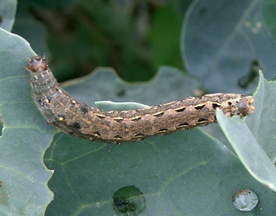
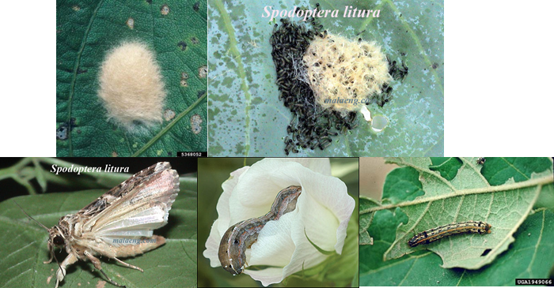

| Home |
| COTTON |
| 1. Leafhopper |
| 2. Cotton Aphid |
| 3. Thrips |
| 4. Whitefly |
| 5. Mealy Bug |
| 6. Red Cotton Bug |
| 7. Dusky Cotton Bug |
| 8. Tobacco Cutworm |
| 9. Leaf Roller |
| 10. Semiloopers |
| 11. Stem Weevil |
| 12. Shoot Weevil |
| 13. Surface Weevil |
| 14. Black Scale |
| 15. White Scale |
| 16. Yellow Stem Scale |
| Questions |
| Download Notes |
PESTS OF COTTON :: Minor Pests :: Tobacco Cutworm
8. Tobacco Cutworm: Spodoptera litura (Noctuidae: Lepidoptera)
Distribution and status: India, Sri Lanka, Indonesia, Bangladesh, Pacific Islands, China, Pakistan, Korea and Japan. It is a regular pest and has potential to be a serious pest.
Host range: Groundnut, citrus, soybean, cotton, tobacco, castor, pulses, millets, safflower, banana, cabbage, tomato, sweet potato, bhendi, chillies, etc.
Damage symptoms: The first instar larvae feed gregariously on the leaf, on which the egg mass is laid by scrapping the epidermal layer, leaving the skeleton of veins. The skeletonized leaf may dry up. Then, the larvae move to other leaves and feed by making small holes. In later stages, they consume most of these leaf tissues and because of severe attack, only the stem and side shoots will be standing in the field without any leaf or bolls. Once squares, flowers and bolls develop, they prefer these better than leaves. They bore into them, feed on the internal content completely and cause shedding of squares and young bolls. This type of feeding is seen only during early morning hours and night, and during hot sunny hours the caterpillars will be hiding in the flowers or in the cracks of the soil. This pest is found to cause damage in all stages of crop growth, but fleshy green leaves should be present for egg laying.
 |
Bionomics: Larva: Pale greenish with dark markings; gregarious in the early stages. Adult: Moth with wavy white markings on a brown forewing. Hind wings white with a brown patch along the margin. Refer groundnut for further information on the duration of life stages .
|
|
 |
|
Adult |
Feeding on flower & leaves |
Management
- Use of light trap to monitor and kill the attracted adult moths or set up the sex pheromone trap Pherodin S.L. at 12/ha to monitor the activity of the pest and to synchronize the pesticide application, if needed, at the maximum activity stage.
- Growing castor along border and irrigation bunds.
- Removal and destruction of egg masses in castor and cotton crops.
- Removal and destruction of early stage larvae found in clusters which can be located easily.
- Collection and destruction of shed bolls and flowers.
- Hand picking and destruction of grown up caterpillars.
- Spray any one of the following insecticides using, a high volume sprayer covering the foliage and soil surface. Chlorpyriphos 20 EC 2.0 L/ha; dichlorvos 76 WSC 1.0 L; Spraying Nuclear Polyhedrosis Virus at 1.5 x 1012 POB per ha or 200 larval equivalent (LE)/ ha.
- Spraying of insecticide should be done either in the early morning or in the evening and NPV in the evening.
- Use of poison bait pellets prepared with rice bran 12.5 kg, jaggery 1.25 kg, Carbaryl 50%WP 1.25 kg and water 7.5 L. This bait can be spread in the fields in the evening hours so that the caterpillars coming out of the soil, feed and get killed.